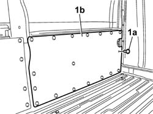
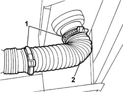
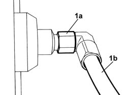
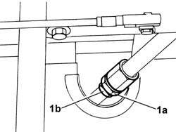

1043A34 FILLER PIPE FROM FITTING TO GPL TANK R R
- Path
- Procedures > 10 ENGINE UNIT > 1043 GPL TANK AND PIPES > 1043A GPL TANK > 1043A34 FILLER PIPE FROM FITTING TO GPL TANK R R
- Kind
- repair procedure (removal / refitting; the operation number is the code)
- Applies to
- engines: 2.0 16V; all production periods
- Interactive page
- https://sloeber94.github.io/elrnDB-fDct/en/#/244002630
Applies to: engines: 2.0 16V; all production periods
 Removing
Removing
 Refitting
RefittingDrain the section of pipe from the LPG filler to the tank, following the instructions in the procedure:
Op. 1043A02 LPG SYSTEM LINES PIPE DRAINING OPERATIONS
Position the vehicle on the lift.
Disconnect the negative battery terminal.
1. Working from inside the load carrying compartment, release the retaining buttons (1a) and remove the left side trim (1b).

Applies to: engines: 2.0 16V; all production periods
1. Loosen the retaining bands.
2. Release the corrugated pipe protecting the LPG filler pipe.

Applies to: engines: 2.0 16V; all production periods
1. Undo the connector (1a) and disconnect the LPG filler pipe (1b) from the filler.

Applies to: engines: 2.0 16V; all production periods
Raise the vehicle.
1. Disconnect the connector (1a) on the pipe connected to the 80% valve and disconnect the repressurizing pipe (1b).
Release the LPG filler pipe from the fastenings on the body and remove it.

Applies to: engines: 2.0 16V; all production periods
Refitting
RemovingCheck the state of the pipe, in other words make sure that there are no cracks, holes or any other damage that could adversely affect the safety of the system.
If it is not okay, replace the entire pipe.
Place the pipe inside the protection along the underbody.
Tighten the connector for the filler pipe to the pipe connected to the 80% valve to the recommended torque.
Value daNm | Fastening | Component | Ø | |
|---|---|---|---|---|
- | 4 | Connector | M20 X 1 |
Lower the vehicle.
Restore the position of the corrugated pipe.
Tighten the connector for the LPG pressurizing pipe to the filler.
Value daNm | Fastening | Component | Ø | |
|---|---|---|---|---|
- | 4 | Connector | M20 X 1 |
Position the corrugated pipe on the LPG pressurizing pipe and secure it using the bands.
Raise the vehicle.
Op. 1043A04 GPL SYSTEM AND PIPES CHECK FOR LEAKS
Position the load compartment left side trim and secure it using the retainers.
Connect the negative battery terminal.
Remove the vehicle from the lift.